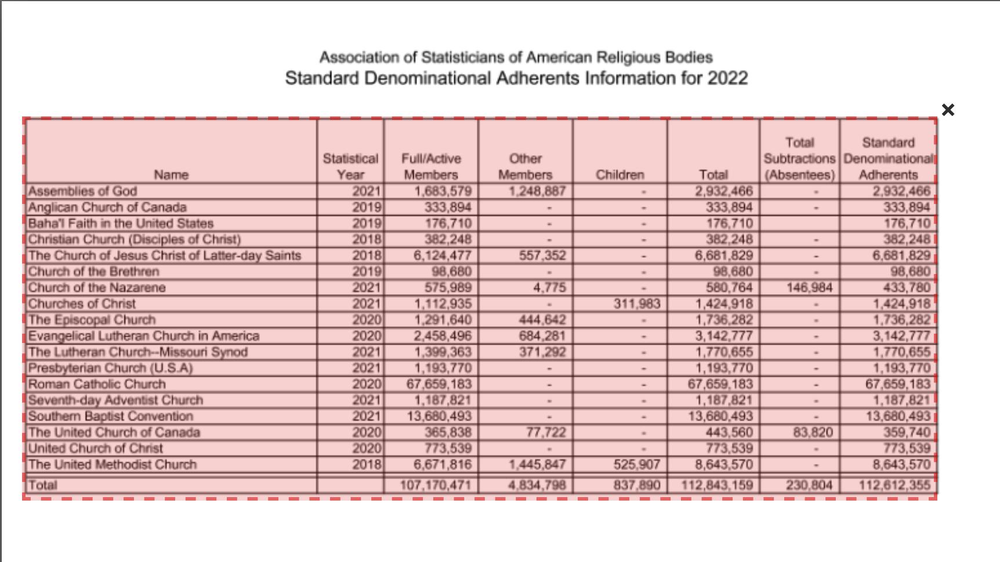
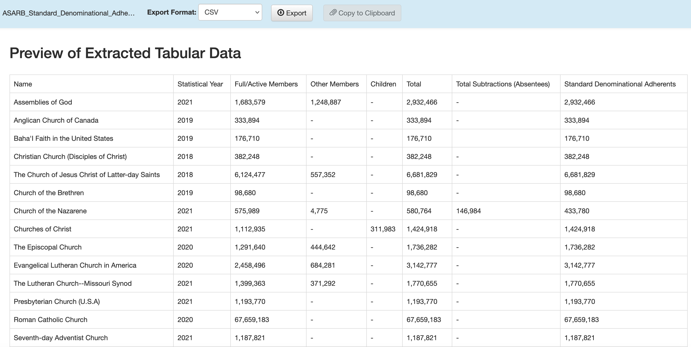
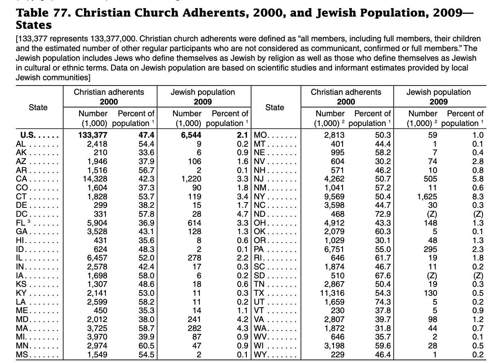
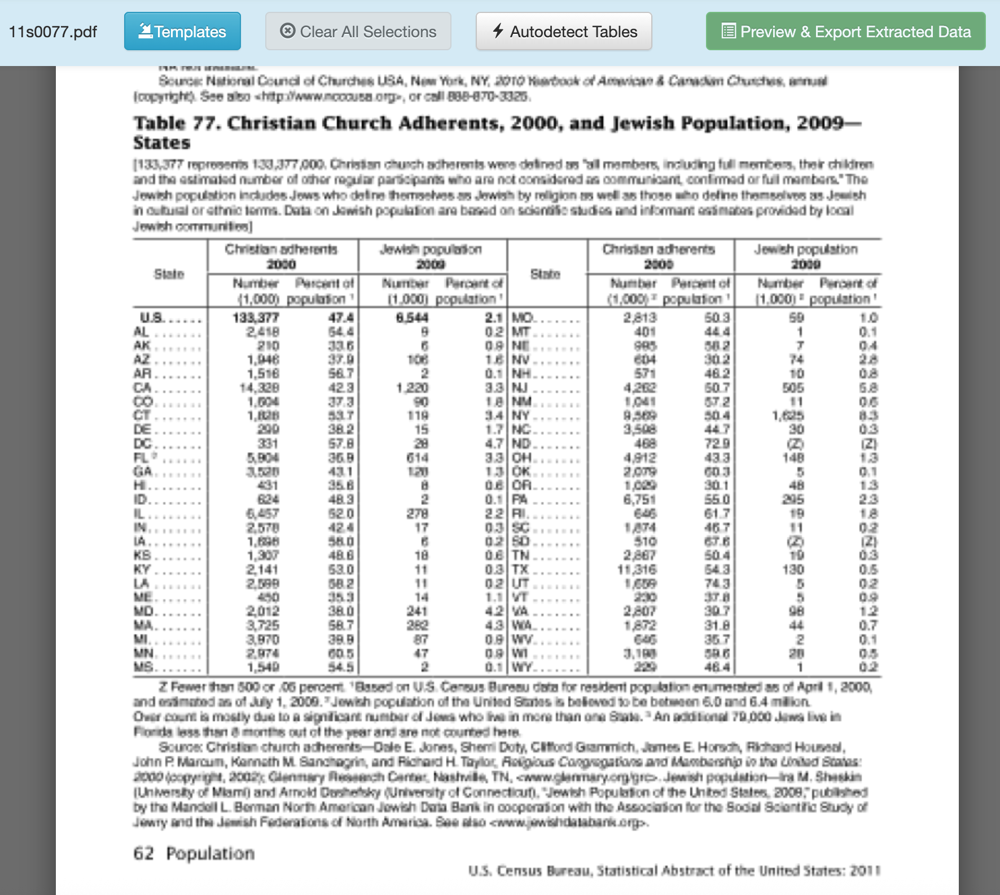
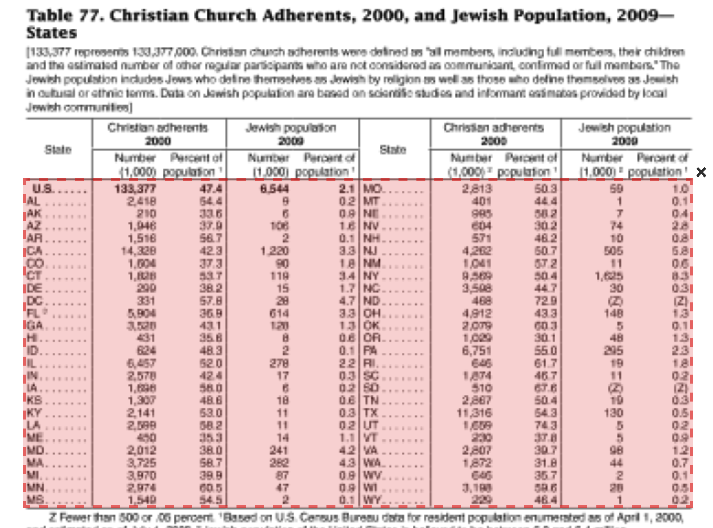
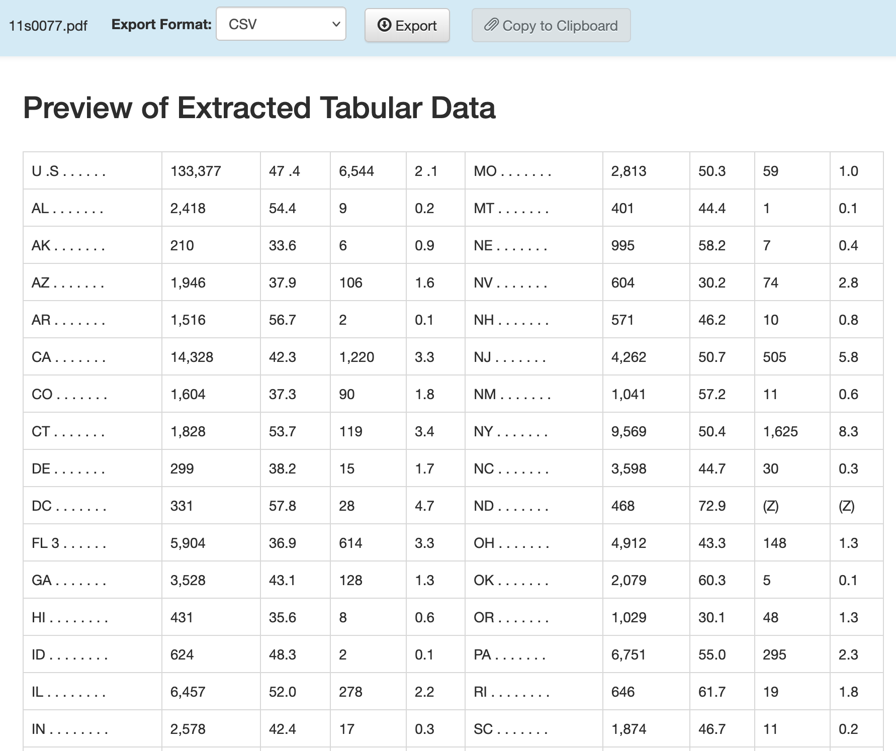

library(tidyverse)
library(janitor)Cleaning Data Part IV: PDFs
The next circle of Hell on the Dante’s Inferno of Data Journalism is the PDF. Governments everywhere love the PDF and publish all kinds of records in a PDF. The problem is a PDF isn’t a data format – it’s a middle finger, saying I’ve Got Your Accountability Right Here, Pal.
It’s so ridiculous that there’s a constellation of tools that do nothing more than try to harvest tables out of PDFs. There are online services like CometDocs where you can upload your PDF and point and click your way into an Excel file. There are mobile device apps that take a picture of a table and convert it into a spreadsheet. But one of the best is a tool called Tabula. It was build by journalists for journalists.
There is a version of Tabula that will run inside of R – a library called Tabulizer – but the truth is I’m having the hardest time installing it on my machine, which leads me to believe that trying to install it across a classroom of various machines would be disastrous. The standalone version works just fine, and it provides a useful way for you to see what’s actually going on.
Unfortunately, harvesting tables from PDFs with Tabula is an exercise in getting your hopes up, only to have them dashed. We’ll start with an example. First, let’s load the tidyverse and janitor.
Easy does it
Tabula works best when tables in PDFs are clearly defined and have nicely-formatted information. Here’s a perfect example: denominational counts from the Association of Statisticians of American Religious Bodies.
Download and install Tabula. Tabula works much the same way as Open Refine does – it works in the browser by spinning up a small webserver in your computer.
When Tabula opens, you click browse to find the PDF on your computer somewhere, and then click import. After it imports, click autodetect tables. You’ll see red boxes appear around what Tabula believes are the tables. You’ll see it does a pretty good job at this.

Now you can hit the green “Preview & Export Extracted Data” button on the top right. You should see something very like this:

You can now export that extracted table to a CSV file using the “Export” button. And then we can read it into R:
adherents <- read_csv("data/tabula-ASARB_Standard_Denominational_Adherents_2022.csv")Rows: 19 Columns: 8
── Column specification ────────────────────────────────────────────────────────
Delimiter: ","
chr (4): Name, Other
Members, Children, Subtractions
(Absentees)
dbl (1): Statistical
Year
num (3): Full/Active
Members, Total, Denominational
Adherents
ℹ Use `spec()` to retrieve the full column specification for this data.
ℹ Specify the column types or set `show_col_types = FALSE` to quiet this message.adherents# A tibble: 19 × 8
Name `Statistical\rYear` `Full/Active\rMembers` `Other\rMembers` Children
<chr> <dbl> <dbl> <chr> <chr>
1 Assembl… 2021 1683579 1,248,887 -
2 Anglica… 2019 333894 - -
3 Baha'I … 2019 176710 - -
4 Christi… 2018 382248 - -
5 The Chu… 2018 6124477 557,352 -
6 Church … 2019 98680 - -
7 Church … 2021 575989 4,775 -
8 Churche… 2021 1112935 - 311,983
9 The Epi… 2020 1291640 444,642 -
10 Evangel… 2020 2458496 684,281 -
11 The Lut… 2021 1399363 371,292 -
12 Presbyt… 2021 1193770 - -
13 Roman C… 2020 67659183 - -
14 Seventh… 2021 1187821 - -
15 Souther… 2021 13680493 - -
16 The Uni… 2020 365838 77,722 -
17 United … 2020 773539 - -
18 The Uni… 2018 6671816 1,445,847 525,907
19 Total NA 107170471 4,834,798 837,890
# ℹ 3 more variables: Total <dbl>, `Subtractions\r(Absentees)` <chr>,
# `Denominational\rAdherents` <dbl>Boom - we’re good to go.
When it looks good, but needs a little fixing
Here’s a slightly more involved PDF, from a 2010 Census Bureau report on religious population by state. Specifically, we’re looking at Table 77 which lists the number and percentage of Christian and Jewish adherents by state:

Looks like a spreadsheet, right? Save that PDF file to your computer in a place where you’ll remember it (like a Downloads folder).
Now let’s repeat the steps we did to import the PDF into Tabula, go to page 67. It should look like this:

Let’s draw a box around what we want, but there’s a catch: the headers aren’t on a single line. If you draw your box around the whole table and preview, you’ll see that there’s a problem. To fix that, we’ll need to limit our box to just the data. Using your cursor, click and drag a box across the table so it looks like this:

Now you can hit the green “Preview & Export Extracted Data” button on the top right. Using the “Stream” method, you should see something very like this:

You can now export that extracted table to a CSV file using the “Export” button. And then we can read it into R and clean up the column names and some other things:
adherents <- read_csv("data/tabula-11s0077.csv") |> clean_names()Rows: 25 Columns: 10
── Column specification ────────────────────────────────────────────────────────
Delimiter: ","
chr (4): U .S . . . . . ., MO . . . . . . ., 59, 1.0
dbl (3): 47 .4, 2 .1, 50.3
num (3): 133,377, 6,544, 2,813
ℹ Use `spec()` to retrieve the full column specification for this data.
ℹ Specify the column types or set `show_col_types = FALSE` to quiet this message.adherents# A tibble: 25 × 10
u_s x133_377 x47_4 x6_544 x2_1 mo x2_813 x50_3 x59 x1_0
<chr> <dbl> <dbl> <dbl> <dbl> <chr> <dbl> <dbl> <chr> <chr>
1 AL . . . . . . . 2418 54.4 9 0.2 MT . … 401 44.4 1 0.1
2 AK . . . . . . . 210 33.6 6 0.9 NE . … 995 58.2 7 0.4
3 AZ . . . . . . . 1946 37.9 106 1.6 NV . … 604 30.2 74 2.8
4 AR . . . . . . . 1516 56.7 2 0.1 NH . … 571 46.2 10 0.8
5 CA . . . . . . . 14328 42.3 1220 3.3 NJ .… 4262 50.7 505 5.8
6 CO . . . . . . . 1604 37.3 90 1.8 NM . … 1041 57.2 11 0.6
7 CT . . . . . . . 1828 53.7 119 3.4 NY . … 9569 50.4 1,625 8.3
8 DE . . . . . . . 299 38.2 15 1.7 NC . … 3598 44.7 30 0.3
9 DC . . . . . . . 331 57.8 28 4.7 ND . … 468 72.9 (Z) (Z)
10 FL 3 . . . . . . 5904 36.9 614 3.3 OH . … 4912 43.3 148 1.3
# ℹ 15 more rowsCleaning up the data in R
The good news is that we have data we don’t have to retype. The bad news is, we have a few things to fix, starting with the fact that the headers shouldn’t be headers. Let’s start by re-importing it and specifying that the first row doesn’t have column headers:
census_adherents <- read_csv("data/tabula-11s0077.csv", col_names = FALSE) |> clean_names()Rows: 26 Columns: 10
── Column specification ────────────────────────────────────────────────────────
Delimiter: ","
chr (6): X1, X3, X5, X6, X9, X10
dbl (1): X8
num (3): X2, X4, X7
ℹ Use `spec()` to retrieve the full column specification for this data.
ℹ Specify the column types or set `show_col_types = FALSE` to quiet this message.census_adherents# A tibble: 26 × 10
x1 x2 x3 x4 x5 x6 x7 x8 x9 x10
<chr> <dbl> <chr> <dbl> <chr> <chr> <dbl> <dbl> <chr> <chr>
1 U .S . . . . . . 133377 47 .4 6544 2 .1 MO . … 2813 50.3 59 1.0
2 AL . . . . . . . 2418 54.4 9 0.2 MT . … 401 44.4 1 0.1
3 AK . . . . . . . 210 33.6 6 0.9 NE . … 995 58.2 7 0.4
4 AZ . . . . . . . 1946 37.9 106 1.6 NV . … 604 30.2 74 2.8
5 AR . . . . . . . 1516 56.7 2 0.1 NH . … 571 46.2 10 0.8
6 CA . . . . . . . 14328 42.3 1220 3.3 NJ .… 4262 50.7 505 5.8
7 CO . . . . . . . 1604 37.3 90 1.8 NM . … 1041 57.2 11 0.6
8 CT . . . . . . . 1828 53.7 119 3.4 NY . … 9569 50.4 1,625 8.3
9 DE . . . . . . . 299 38.2 15 1.7 NC . … 3598 44.7 30 0.3
10 DC . . . . . . . 331 57.8 28 4.7 ND . … 468 72.9 (Z) (Z)
# ℹ 16 more rowsOk, now we have all the data. But we need actual headers. Let’s add those using rename(), keeping in mind that the new name comes first.
census_adherents <- read_csv("data/tabula-11s0077.csv", col_names = FALSE) |> clean_names() |>
rename(state = x1, christian_2000 = x2, christian_2000_pct = x3, jewish_2009 = x4, jewish_2009_pct = x5, state2 = x6, christian_2000_2 = x7, christian_2000_pct_2 = x8,
jewish_2009_2 = x9, jewish_2009_pct_2 = x10)Rows: 26 Columns: 10
── Column specification ────────────────────────────────────────────────────────
Delimiter: ","
chr (6): X1, X3, X5, X6, X9, X10
dbl (1): X8
num (3): X2, X4, X7
ℹ Use `spec()` to retrieve the full column specification for this data.
ℹ Specify the column types or set `show_col_types = FALSE` to quiet this message.census_adherents# A tibble: 26 × 10
state christian_2000 christian_2000_pct jewish_2009 jewish_2009_pct state2
<chr> <dbl> <chr> <dbl> <chr> <chr>
1 U .S . … 133377 47 .4 6544 2 .1 MO . …
2 AL . .… 2418 54.4 9 0.2 MT . …
3 AK . . … 210 33.6 6 0.9 NE . …
4 AZ . . … 1946 37.9 106 1.6 NV . …
5 AR . . … 1516 56.7 2 0.1 NH . …
6 CA . . … 14328 42.3 1220 3.3 NJ .…
7 CO . . … 1604 37.3 90 1.8 NM . …
8 CT . . … 1828 53.7 119 3.4 NY . …
9 DE . . … 299 38.2 15 1.7 NC . …
10 DC . . … 331 57.8 28 4.7 ND . …
# ℹ 16 more rows
# ℹ 4 more variables: christian_2000_2 <dbl>, christian_2000_pct_2 <dbl>,
# jewish_2009_2 <chr>, jewish_2009_pct_2 <chr>Splitting and recombining
We have two sets of columns here, one for each half of the page. Let’s split them apart and then recombine them vertically. We’ll do that using select() to grab the columns we want, rename() to make the column names the same and then bind_rows() to stack them vertically (we’ll learn more about bind_rows() soon). We also make sure that both sets of columns are numeric.
left_half <- census_adherents |>
select(state, christian_2000, christian_2000_pct, jewish_2009, jewish_2009_pct) |>
mutate(
christian_2000 = as.numeric(christian_2000),
christian_2000_pct = as.numeric(christian_2000_pct),
jewish_2009 = as.numeric(jewish_2009),
jewish_2009_pct = as.numeric(jewish_2009_pct)
)Warning: There were 2 warnings in `mutate()`.
The first warning was:
ℹ In argument: `christian_2000_pct = as.numeric(christian_2000_pct)`.
Caused by warning:
! NAs introduced by coercion
ℹ Run `dplyr::last_dplyr_warnings()` to see the 1 remaining warning.right_half <- census_adherents |>
select(state2, christian_2000_2, christian_2000_pct_2, jewish_2009_2, jewish_2009_pct_2) |>
rename(state = state2,
christian_2000 = christian_2000_2,
christian_2000_pct = christian_2000_pct_2,
jewish_2009 = jewish_2009_2,
jewish_2009_pct = jewish_2009_pct_2) |>
mutate(
christian_2000 = as.numeric(christian_2000),
christian_2000_pct = as.numeric(christian_2000_pct),
jewish_2009 = as.numeric(jewish_2009),
jewish_2009_pct = as.numeric(jewish_2009_pct)
)Warning: There were 2 warnings in `mutate()`.
The first warning was:
ℹ In argument: `jewish_2009 = as.numeric(jewish_2009)`.
Caused by warning:
! NAs introduced by coercion
ℹ Run `dplyr::last_dplyr_warnings()` to see the 1 remaining warning.census_adherents_combined <- bind_rows(left_half, right_half) |>
filter(!is.na(state)) # Remove any empty rows
# View the result
census_adherents_combined# A tibble: 52 × 5
state christian_2000 christian_2000_pct jewish_2009 jewish_2009_pct
<chr> <dbl> <dbl> <dbl> <dbl>
1 U .S . . . … 133377 NA 6544 NA
2 AL . . . . . … 2418 54.4 9 0.2
3 AK . . . . . .… 210 33.6 6 0.9
4 AZ . . . . . .… 1946 37.9 106 1.6
5 AR . . . . . .… 1516 56.7 2 0.1
6 CA . . . . . .… 14328 42.3 1220 3.3
7 CO . . . . . .… 1604 37.3 90 1.8
8 CT . . . . . .… 1828 53.7 119 3.4
9 DE . . . . . .… 299 38.2 15 1.7
10 DC . . . . . .… 331 57.8 28 4.7
# ℹ 42 more rowsYou’ll notice that some of the values are showing up as NA - that’s because they couldn’t be converted to numbers. What’s causing those NAs is that the values in them were “47 .4” and “2 .1” - those can’t be successfully converted into numbers without removing the space. We’ll use a function called str_replace() to remove those extra spaces in all of the data columns (the Jewish populations of North and South Dakota are so small that they don’t get actual values here) before re-running the code from above.
census_adherents <- census_adherents |>
mutate(
christian_2000_pct = str_replace(christian_2000_pct, " \\.", "."),
jewish_2009_pct = str_replace(jewish_2009_pct, " \\.", "."),
christian_2000_pct_2 = str_replace(christian_2000_pct_2, " \\.", "."),
jewish_2009_pct_2 = str_replace(jewish_2009_pct_2, " \\.", ".")
)
left_half <- census_adherents |>
select(state, christian_2000, christian_2000_pct, jewish_2009, jewish_2009_pct) |>
mutate(
christian_2000 = as.numeric(christian_2000),
christian_2000_pct = as.numeric(christian_2000_pct),
jewish_2009 = as.numeric(jewish_2009),
jewish_2009_pct = as.numeric(jewish_2009_pct)
)
right_half <- census_adherents |>
select(state2, christian_2000_2, christian_2000_pct_2, jewish_2009_2, jewish_2009_pct_2) |>
rename(state = state2,
christian_2000 = christian_2000_2,
christian_2000_pct = christian_2000_pct_2,
jewish_2009 = jewish_2009_2,
jewish_2009_pct = jewish_2009_pct_2) |>
mutate(
christian_2000 = as.numeric(christian_2000),
christian_2000_pct = as.numeric(christian_2000_pct),
jewish_2009 = as.numeric(jewish_2009),
jewish_2009_pct = as.numeric(jewish_2009_pct)
)Warning: There were 2 warnings in `mutate()`.
The first warning was:
ℹ In argument: `jewish_2009 = as.numeric(jewish_2009)`.
Caused by warning:
! NAs introduced by coercion
ℹ Run `dplyr::last_dplyr_warnings()` to see the 1 remaining warning.census_adherents_combined <- bind_rows(left_half, right_half) |>
filter(!is.na(state)) # Remove any empty rows
# View the result
census_adherents_combined# A tibble: 52 × 5
state christian_2000 christian_2000_pct jewish_2009 jewish_2009_pct
<chr> <dbl> <dbl> <dbl> <dbl>
1 U .S . . . … 133377 47.4 6544 2.1
2 AL . . . . . … 2418 54.4 9 0.2
3 AK . . . . . .… 210 33.6 6 0.9
4 AZ . . . . . .… 1946 37.9 106 1.6
5 AR . . . . . .… 1516 56.7 2 0.1
6 CA . . . . . .… 14328 42.3 1220 3.3
7 CO . . . . . .… 1604 37.3 90 1.8
8 CT . . . . . .… 1828 53.7 119 3.4
9 DE . . . . . .… 299 38.2 15 1.7
10 DC . . . . . .… 331 57.8 28 4.7
# ℹ 42 more rowsWe could stop here, but there are a bunch of periods in the state column and it’s better to remove them - it will make filtering easier. Let’s use str_remove_all() to do that, too. First we’ll replace all periods and then all spaces:
census_adherents_combined <- census_adherents_combined |>
mutate(state = str_remove_all(state, "\\.") |> str_remove_all(" "))
census_adherents_combined# A tibble: 52 × 5
state christian_2000 christian_2000_pct jewish_2009 jewish_2009_pct
<chr> <dbl> <dbl> <dbl> <dbl>
1 US 133377 47.4 6544 2.1
2 AL 2418 54.4 9 0.2
3 AK 210 33.6 6 0.9
4 AZ 1946 37.9 106 1.6
5 AR 1516 56.7 2 0.1
6 CA 14328 42.3 1220 3.3
7 CO 1604 37.3 90 1.8
8 CT 1828 53.7 119 3.4
9 DE 299 38.2 15 1.7
10 DC 331 57.8 28 4.7
# ℹ 42 more rowsThere are a few important things to explain here:
- Because we’re replacing a literal period (.), we need to make sure that R knows that. Hence the ‘\.’ Why? Because ‘.’ is a valid expression meaning “any character”, so if we didn’t have the backslashes the above code would make the entire column blank (try it!)
- We need to use str_remove_all() twice because we’re removing two different things.
All things considered, that was pretty easy. Many - most? - electronic PDFs aren’t so easy to parse. Sometimes you’ll need to open the exported CSV file and clean things up before importing into R. Other times you’ll be able to do that cleaning in R itself.
Here’s the sad truth: THIS IS PRETTY GOOD. It sure beats typing it out. And since many government processes don’t change all that much, you can save the code to process subsequent versions of PDFs.